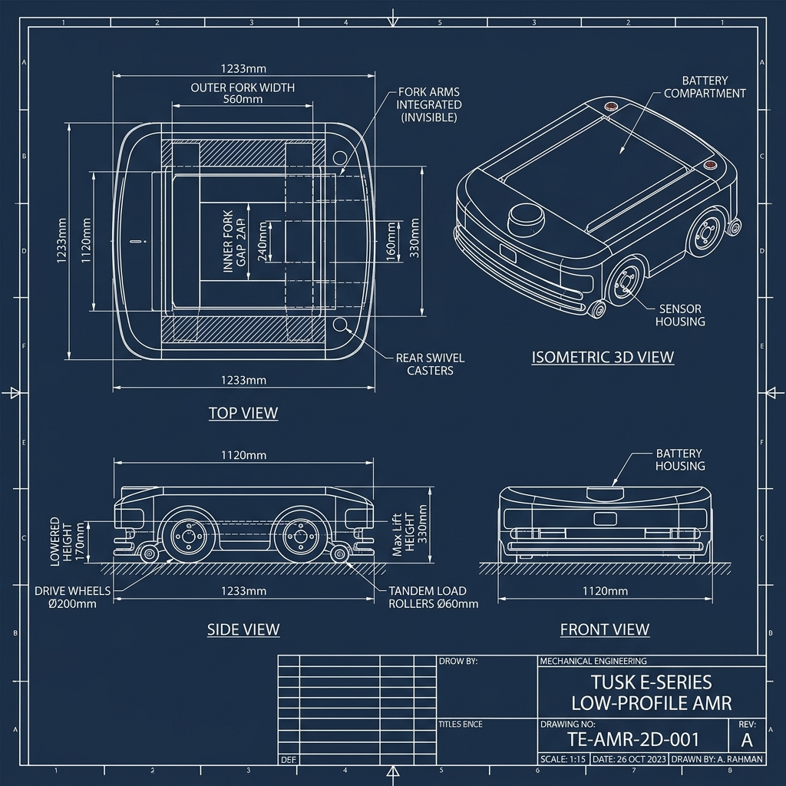

Tusk Robots E-Series (Invisible Fork Arm) Pallet AMR - CAD Design & Dimensioning Guide
This document provides all verified dimensions, mechanical specifications, tolerances, and CAD blueprint sheets required to 3D model and manufacture the Tusk Robots E-Series Low-Profile Pallet AMR (E10 Standard & E10T Telescopic "Invisible Fork Arm" models).
1. Master CAD Dimensioning Summary
Below is the consolidated master dimensions table to be used directly in SolidWorks, Fusion 360, or Inventor for 3D modeling:
| Engineering Parameter | Dimension (mm) | Tolerance | Notes & CAD Reference |
|---|---|---|---|
| Overall Robot Length | 1233 mm | \pm 1.0\text{ mm} | Front bumper to rear caster housing |
| Overall Robot Width | 1120 mm | \pm 1.0\text{ mm} | Outer steel weldment frame envelope |
| Chassis Lowered Height | 170 mm | \pm 0.5\text{ mm} | Top of platform to floor (lowered) |
| Max Lift Height (Top of Deck) | 330 mm | \pm 1.0\text{ mm} | Total vertical lift travel: 160\text{ mm} |
| Fork Assembly Outer Width | 560 mm | \pm 0.5\text{ mm} | Fits standard EUR-2 / ISO pallets |
| Fork Assembly Inner Gap | 240 mm | \pm 0.5\text{ mm} | Space between left and right tynes |
| Individual Tyne Width | 160 mm | \pm 0.5\text{ mm} | \frac{560 - 240}{2} = 160\text{ mm} tyne width |
| Fork Nominal Length (E10) | 1100 mm | \pm 1.0\text{ mm} | Standard fixed length fork tyne |
| Fork Extension Reach (E10T) | 1400 mm max | \pm 2.0\text{ mm} | Multi-stage telescopic reach |
| Drive Wheel Diameter | \varnothing 200\text{ mm} | \pm 0.2\text{ mm} | Polyurethane tread, 65\text{ mm} width |
| Tandem Load Roller Diameter | \varnothing 60\text{ mm} | \pm 0.2\text{ mm} | Polyurethane 95A, 180\text{ mm} length |
| Roller Bogie Outer Length | 198 mm | \pm 0.5\text{ mm} | Fits 180\text{ mm} roller + 2\times 8\text{ mm} plates |
| Roller Shaft Specs | \varnothing 20\text{ h6} \times 188\text{ mm} | \pm 0.1\text{ mm} | EN8 Steel with circlip grooves |
| Minimum Ground Clearance | 25 mm | \pm 0.5\text{ mm} | Chassis base plate to floor clearance |
2. 2D Master CAD Dimensioned Blueprint Sheet
Use the engineering drawing sheet below for placing sketch origins, centerlines, and datum planes during 3D CAD modeling:

3. Product Family Real Models Showcase
A. Tusk Model E10 (Standard Low-Profile Pallet AMR)
Integrated low-profile pallet AMR featuring fixed-length "invisible" fork tynes and passive mechanical pull-rod wheel deployment.
- Payload Rating: 1000\text{ kg}
- Real Product Photo:

B. Tusk Model E10T (Telescopic Extending Fork AMR)
Equipped with dual-stage telescoping tynes that extend up to 1400\text{ mm} out into pallet racks while the AMR remains stationary.
- Payload Rating: 1000\text{ kg}
- Extension Reach: 1400\text{ mm}
- Real Product Photo:

4. Detailed Component Bill of Materials (BOM) & Materials
When modeling individual parts and assemblies, use the following material assignments and component callouts:
| Item No. | Component Name | Material / Spec | Quantity | Critical Dimensions / Notes |
|---|---|---|---|---|
| 1 | Base Frame Weldment | Q235 Steel Tube (80\times 60\times 4\text{ mm}) | 1 Set | Inner frame cutout: 960\text{ mm} \times 713\text{ mm} |
| 2 | Top Platform (Fork Deck) | Q235 Steel Plate (8\text{ mm}) | 1 Pc | Overall: 1100\times 560\text{ mm}; 8\times \varnothing 11\text{ mm} holes |
| 3 | Scissor Arm (Part 1) | Rectangular Tube (60\times 40\times 6\text{ mm}) | 2 Pcs | Total length: 760\text{ mm}; Pivot C-to-C: 720\text{ mm} |
| 4 | Scissor Arm (Part 2) | Rectangular Tube (60\times 40\times 6\text{ mm}) | 2 Pcs | Mirrored cross arm with central \varnothing 20\text{ H7} bore |
| 5 | Cross Pin (Pivot) | EN8 Steel (\varnothing 20\text{ h6}) | 4 Pcs | Body length: 120\text{ mm}; Total length: 140\text{ mm} |
| 6 | Pivot Bushing | Bronze CuSn12 | 8 Pcs | Outer: \varnothing 25\text{ h6}, Inner: \varnothing 20\text{ H7}, Length: 25\text{ mm} |
| 7 | Ball Screw Shaft | SCM415 Hardened Steel | 1 Pc | Spec: SFU2505 (Dia 25\text{ mm}, Lead 5\text{ mm}), 600\text{ mm} L |
| 8 | Ball Nut & Housing | Cast Steel Block | 1 Pc | Nut body: \varnothing 40\text{ mm}, Flange: 55\text{ mm} sq, 4\times \varnothing 9 holes |
| 9 | BK15 Bearing Block | Cast Iron Housing | 2 Pcs | Base: 89\times 34\text{ mm}, Height: 39\text{ mm}, Bore: \varnothing 15\text{ mm} |
| 10 | Drive Motor | 750W 24V BLDC Motor | 2 Pcs | Rated speed: 3000\text{ RPM}, Gearbox ratio: 1:20 |
| 11 | Lift Motor | 1000W 24V BLDC Motor | 1 Pc | Rated speed: 3000\text{ RPM}, Gearbox ratio: 1:15 |
| 12 | Roller Bogie Housing | Q235 Steel Plate (8\text{ mm}) | 2 Sets | Outer length: 198\text{ mm}, Height: 102\text{ mm}, Width: 75\text{ mm} |
| 13 | Polyurethane Roller | Polyurethane 95A Shore | 4 Pcs | Outer dia: \varnothing 60\text{ mm}, Inner dia: \varnothing 20\text{ mm}, Length: 180\text{ mm} |
5. Subsystem Mechanical Schematics
A. Vertical Lift Carriage Drive
The vertical carriage moves on twin HGR25 linear rails and is driven by the central SFU2505 ball screw:

B. Folding Load Roller Kinematics
For standard E10 models, the front tandem load rollers retract inside the fork cavity when lowered, and deploy down to touch the floor when raised:

6. General CAD Modeling Guidelines & Tolerances
1. Standard Machining Tolerances (ISO 2768-m):
- 0 - 6\text{ mm}: \pm 0.1\text{ mm}
- 6 - 30\text{ mm}: \pm 0.2\text{ mm}
- 30 - 120\text{ mm}: \pm 0.3\text{ mm}
- 120 - 400\text{ mm}: \pm 0.5\text{ mm}
- 400 - 1000\text{ mm}: \pm 0.8\text{ mm}
- 1000 - 2000\text{ mm}: \pm 1.0\text{ mm}
2. Weldment Notes:
- All structural tube joints require 6\text{ mm} continuous fillet welds (MIG process, ER70S-6 filler wire).
- All sharp edges and corners must be deburred with R1 - R2\text{ mm} radii.
3. Surface Finish:
- Industrial powder coating (Orange RAL 2004 / Dark Grey RAL 7016), dry film thickness 80 - 100\,\mu\text{m}.